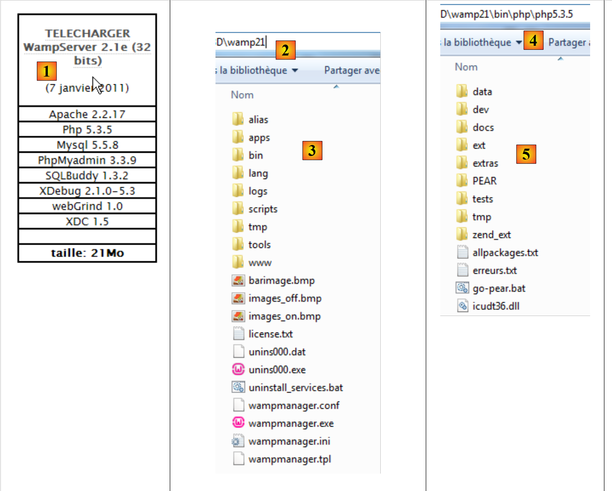
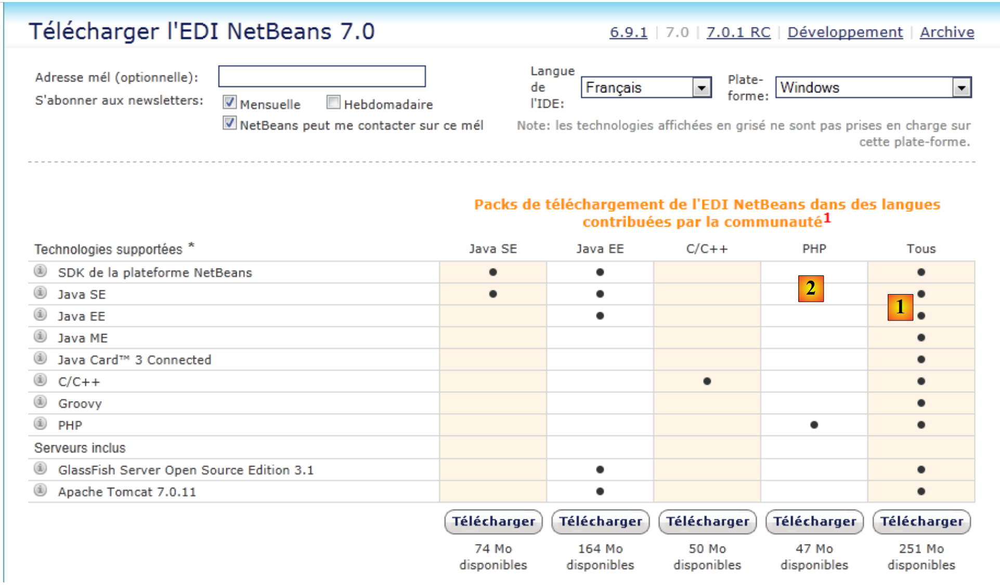
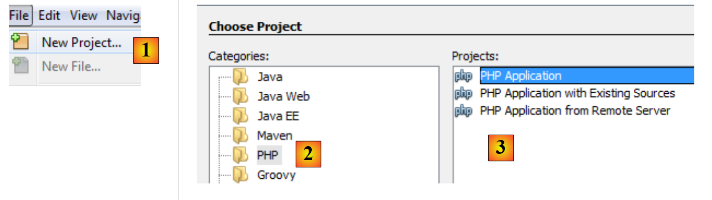
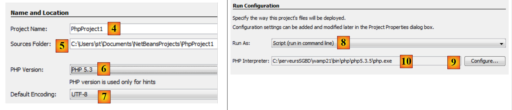
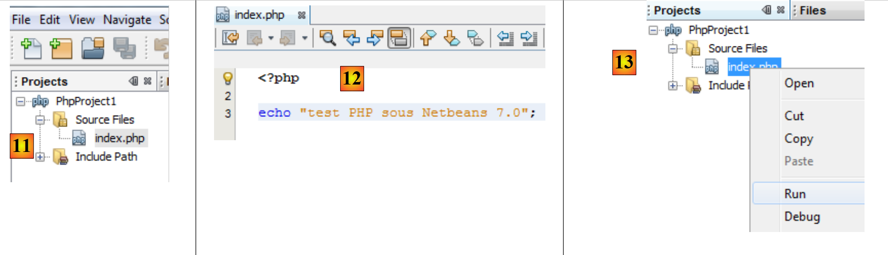
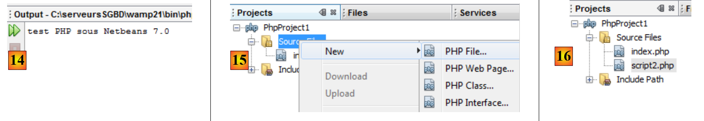

2. Instalação de um ambiente de trabalho
Os scripts foram escritos e testados no seguinte ambiente:
- um ambiente de servidor web Apache / SGBD MySQL / PHP 5.3 denominado WampServer.
- o ambiente de desenvolvimento NetBeans 7.0 IDE
2.0.1. Instalação do WampServer
O WampServer é um pacote que reúne vários programas:
- um servidor web Apache. Iremos utilizá-lo para escrever scripts web em PHP
- o SGBD MySQL
- a linguagem de script PHP
- uma ferramenta de administração do SGBD MySQL escrita em PHP: phpMyAdmin
O Wamp Server pode ser descarregado (julho de 2011) no seguinte endereço:
 |
- no [1], descarrega-se a versão adequada do WampServer
- a instalação cria a estrutura de pastas [2] e [3]
- em [4] e [5], a pasta de instalação de PHP
2.0.2. Instalação do IDE NetBeans 7.0
O IDE NetBeans 7.0 pode ser descarregado no seguinte endereço (julho de 2011):
 |
Pode descarregar-se quer a versão completa [1], quer a versão limitada PHP [2], que é mais leve. Depois de instalar e iniciar o NetBeans, é possível criar um primeiro projeto PHP.
 |
- No [1], selecione a opção «File / New Project»
- no [2], selecione a categoria [PHP]
- no [3], selecione o tipo de projeto [PHP Application]
 |
- no [4], atribua um nome ao projeto
- em [5], escolher uma pasta para o projeto
- em [6], selecione a versão do PHP que descarregou
- em [7], selecione a codificação UTF-8 para os ficheiros PHP
- em [8], selecione o modo [Script] para executar os scripts PHP no modo de linha de comandos. Selecione [Local Web Server] para executar um script PHP num ambiente web.
- No [9,10], indique o diretório de instalação do interpretador PHP do pacote WampServer.
- Selecione [Finish] para concluir o assistente de criação do projeto PHP.
 |
- No [11], o projeto é criado com um script [index.php]
- em [12], escreve-se um script PHP mínimo
- em [13], executa-se o [index.php]
 |
- em [14], os resultados na janela [output] do NetBeans.
- no [15], cria-se um novo script
- em [16], o novo script
O leitor poderá criar todos os scripts que se seguem no mesmo projeto PHP.
Agora que o ambiente de trabalho foi instalado, podemos abordar os conceitos básicos do PHP.